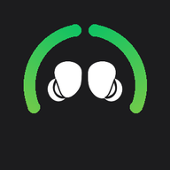
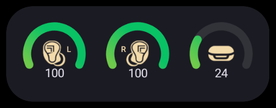
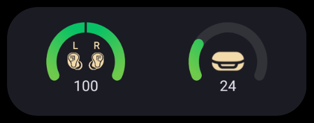

TINYBUDS by TinyOwl
Your earbuds battery,
at a glance.
A small widget on the home screen shows how much is left in your Bluetooth earbuds.
A tap shows the rest: each bud, the case, time left and how long you listened this week.



On the home screenA 3×1 or 1×1 widget with rings or bars, always up to date.
Left, right, caseEach bud and the case on SoundPeats earbuds, the overall level on the rest.
Time leftAbout how long the buds will last at today's pace, and a week of listening.
Getting started
A widget for your earbuds.
TinyBuds shows the battery of your Bluetooth earbuds on the home screen. Pair the earbuds with the
phone as usual, then add a widget. On first use the app asks for Nearby devices: it needs it to see your paired
earbuds and their battery.
Add the widget
Open TinyBuds and tap Add widget, or long-press the home screen, open
Widgets and find TinyBuds. There are two sizes: 3×1 and 1×1. When the earbuds are
not connected, the widget keeps the last level and shows how long ago it was seen, for example 2 h ago.

Setup
When you add a widget, the setup screen opens. Choose earbuds from your paired devices,
then pick what to show, the style, a label and a color. Save puts the widget on the home screen. To change it
later, tap the widget and then Setup.
What to show
Earbuds - one level for the pair. Earbuds + case - the pair and the case. Case - the case
alone. L, R + case - the left bud, the right bud and the case, each on its own. L | R in one + case -
left and right in one block, next to the case. Only the options your earbuds support are offered: earbuds that report
one overall level show Earbuds only.
Style, label and color
Rings draw each level as a ring around an icon; Bars draw it as a bar. Label adds a short
name on the widget, handy with several pairs. The earbuds color paints the icons: the brand color, or your own.
Free and Pro
Free for one widget. Pro for the rest.
Every new install gets Pro free for 14 days. After the trial the widget keeps working with the
free look. Pro is a one-time 2.99 EUR purchase on Google Play, with no ads and no subscription.
| Free | Pro |
|---|
| Widgets | One | More than one |
| Style | Rings | Rings or bars |
| Color | Brand color | Your own colors |
| Label on the widget | - | Yes |
| Overall level, all earbuds | Yes | Yes |
| Left, right and case (SoundPeats) | Yes | Yes |
| L | R in one block | - | Yes |
| Earbuds page with rings and history | Yes | Yes |
| Time left | - | Yes |
| Battery graph, last 24 h | - | Yes |
| Listening time, 7 days | - | Yes |
| Ads | None | None |
The purchase stays with your Google account and comes back when you reinstall the app.
Privacy
No TinyBuds account, no ads, no analytics, no tracking, and no server of ours; nothing is sent to us. Everything the
app reads and stores stays on the phone. The only online service it uses is Google Play, for the optional Pro
purchase. The full policy: tinyowllabs.com/tinybuds/privacy
Questions, ideas, earbuds that do not show
hello@tinyowllabs.com
App and privacy policy
tinyowllabs.com/tinybuds
Independent developer
TinyOwl